토목기사 (2014-05-25 기출문제)
1과목: 응용역학
1. 그림과 같은 3힌지 라멘의 휨모멘트도(BMD)는?
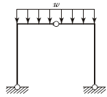
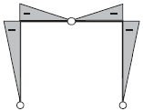
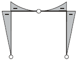
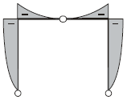
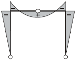
(정답률: 84%)

2. 그림과 같은 단순보의 단면에 발생하는 최대 전단응력의 크기는?
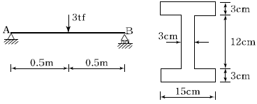
- 35.2kgf/cm2
- 38.6kgf/cm2
- 44.5kgf/cm2
- 49.3kgf/cm2
(정답률: 64%)
3. 직사각형 단면의 보가 최대휨모멘트 Mmax =2 tf⋅m 를 받을 때 A-A 단면의 휨응력은?
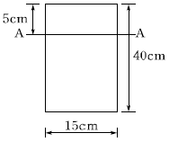
- 22.5kgf/cm2
- 37.5kgf/cm2
- 42.5kgf/cm2
- 46.5kgf/cm2
(정답률: 62%)
4. 그림과 같은 캔틸레버보에서 휨모멘트에 의한 탄성변형에너지는? (단, EI는 일정)
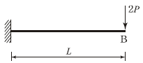
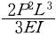
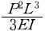
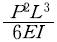
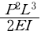
(정답률: 62%)
5. 그림의 수평부재 AB는 A지점은 힌지로 지지되고 B점에는 집중하중 Q가 작용하고 있다. C점과 D점에서는 끝단이 힌지로 지지된 길이가 L이고, 휨강성이 모두 EI로 일정한 기둥으로 지지되고 있다. 두 기둥의 좌굴에 의해서 붕괴를 일으키는 하중 Q의 크기는?
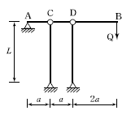
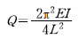
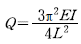
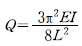
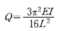
(정답률: 59%)
6. 600kgf의 힘이 그림과 같이 A와 C의 모서리에 작용하고 있다. 이 두 힘에 의해서 발생하는 모멘트는?
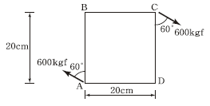
- 163.9 kgf⋅m
- 169.7 kgf⋅m
- 173.9 kgf⋅m
- 179.7 kgf⋅m
(정답률: 51%)
7. 다음 봉재의 단면적이 A이고 탄성계수가 E 일 때 C점의 수직처짐은?
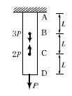
- 4PL/EA
- 3PL/EA
- 2PL/EA
- PL EA
(정답률: 60%)
8. 그림과 같은 단순보에서 AB 구간의 전단력 및 휨모멘트의 값은?
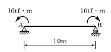
- S=10 tf, M=10 tf⋅m
- S=10 tf, M=20 tf⋅m
- S=0, M=-10 tf⋅m
- S=20 tf, M=-10 tf⋅m
(정답률: 73%)
9. 캔틸레버 보의 끝 B점에 집중하중 P 와 우력모멘트 Mo가 작용하고 있다. B점에서의 연직변위는 얼마인가? (단, 보의 EI는 일정하다.)
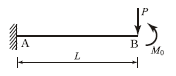
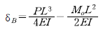
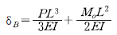
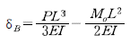
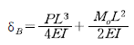
(정답률: 69%)
10. 양단 고정인 조건의 길이가 3m이고 가로 20cm, 세로 30cm인 직사각형 단면의 기둥이 있다. 이 기둥의 좌굴응력은 약 얼마인가? (단, E=2.1×105kgf/cm2, 이 기둥은 장주이다.)
- 2,432 kgf/cm2
- 3,070 kgf/cm2
- 4,728 kgf/cm2
- 6,909 kgf/cm2
(정답률: 53%)
11. 그림과 같은 단주에 편심하중이 작용할 때 최대 압축응력은?
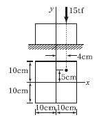
- 138.75kgf/cm2
- 172.65kgf/cm2
- 245.75kgf/cm2
- 317.65kgf/cm2
(정답률: 61%)
12. 그림과 같은 3힌지 아치의 중간 힌지에 수평하중 P가 작용할 때 A지점의 수직반력과 수평반력은? (단, A지점의 반력은 그림과 같은 방향을 정(+)으로 한다.)
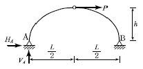
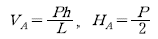
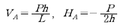
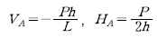
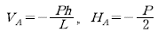
(정답률: 68%)
13. 그림과 같은 트러스에서 부재 U1 및 D1의 부재력은?
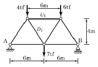
- U1=5tf(압축), D1=9tf(인장)
- U1=5tf(인장), D1=9tf(압축)
- U1=9tf(압축), D1=5tf(인장)
- U1=9tf(인장), D1=5tf(압축)
(정답률: 59%)
14. 그림과 같은 단순보에서 허용 휨응력 σallow=50kgf/cm2 , 허용 전단응력 τallow=5kgf/cm2일 때 하중 P의 한계치는?
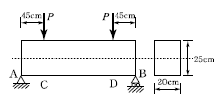
- 1,666.7kgf
- 2,516.7kgf
- 2,500.0kgf
- 2,314.8kgf
(정답률: 53%)
15. 그림과 같이 1차 부정정보에 등간격으로 집중하중이 작용하고 있다. 반력 RA와 RB의 비는?
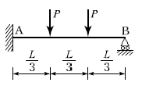
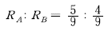
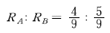
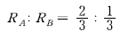
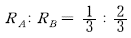
(정답률: 55%)
16. 그림과 같은 구조물에서 부재 AB가 받는 힘의 크기는?
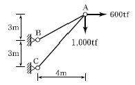
- 3,166.7tf
- 3,274.2tf
- 3,368.5tf
- 3,485.4tf
(정답률: 63%)
17. 그림과 같은 단순보에 등분포하중 q가 작용할 때 보의 최대 처짐은? (단, EI 는 일정하다.)
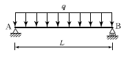
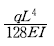
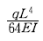
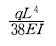
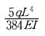
(정답률: 77%)
18. 2경간 연속보의 중앙지점 B에서의 반력은? (단, EI는 일정하다.)
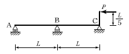
- 1/25P
- 1/15P
- 1/5P
- 3/10P
(정답률: 53%)
19. 전단중심(Shear Center)에 대한 다음 설명 중 옳지 않은 것은?
- 전단중심이란 단면이 받아내는 전단력의 합력점의 위치를 말한다.
- 1축이 대칭인 단면의 전단중심은 도심과 일치한다.
- 하중이 전단중심점을 통과하지 않으면 보는 비틀린다.
- 1축이 대칭인 단면의 전단중심은 그 대칭축 선상에 있다.
(정답률: 52%)
20. 그림과 같은 4개의 힘이 작용할 때 G점에 대한 모멘트는?
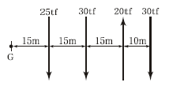
- 3,825 tf⋅m
- 2,025 tf⋅m
- 2,175 tf⋅m
- 1,650 tf⋅m
(정답률: 72%)
2과목: 측량학
21. 두 점간의 고저차를 정밀하게 측정하기 위하여 A, B 두 사람이 각각 다른 레벨과 표척을 사용하여 왕복관측한 결과가 다음과 같다. 두 점간 고저차의 최확값은?
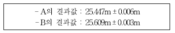
- 25.621m
- 25.577m
- 25.498m
- 25.449m
(정답률: 54%)
22. 선측량에 관한 설명 중 옳은 것은?
- 일반적으로 단곡선 설치 시 가장 많이 이용하는 방법은 지거법이다.
- 곡률이 곡선길이에 비례하는 곡선을 클로소이드 곡선이라 한다.
- 완화곡선의 접선은 시점에서 원호에, 종점에서 직선에 접한다.
- 완화곡선의 반지름은 종점에서 무한대이고 시점에서는 원곡선의 반지름이 된다.
(정답률: 54%)
23. 그림과 같은 트래버스에서
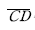
측선의 방위는? (단,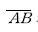
의 방위 = N 82°10′E, ∠ABC = 98°39′, ∠BCD = 67°14′이다.)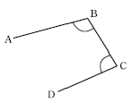
- S 6° 17' W
- S 83° 43' W
- N 6° 17' W
- N 83° 43' W
(정답률: 36%)
24. 교각(I) 60°, 외선 길이(E) 15m인 단곡선을 설치할때 곡선길이는?
- 85.2m
- 91.3m
- 97.0m
- 101.5m
(정답률: 52%)
25. 축척 1 : 50000 지형도 상에서 주곡선 간의 도상 길이가 1cm 이었다면 이 지형의 경사는?
- 4%
- 5%
- 6%
- 10%
(정답률: 49%)
26. 평판측량의 전진법으로 측량하여 축척 1 : 300 도면을 작성하였다. 측점A를 출발하여 B, C, D, E, F를 지나 A점에 폐합시켰을 때 도상 오차가 0.6mm이었다면 측점E의 오차 배분량은? (단, 실제거리는 AB=40m, BC= 50m, CD=55m, DE=35m, EF=45m, FA=55m)
- 0.1mm
- 0.2mm
- 0.4mm
- 0.6mm
(정답률: 45%)
27. 다음 중 도형이 곡선으로 둘러싸인 지역의 면적 계산방법으로 가장 적합한 것은?
- 좌표에 의한 계산법
- 방안지에 의한 방법
- 배횡거(D.M.D)에 의한 방법
- 두 변과 그 협각에 의한 방법
(정답률: 55%)
28. 수준측량에서 발생하는 오차에 대한 설명으로 틀린 것은?
- 기계의 조정에 의해 발생하는 오차는 전시와 후시의 거리를 같게 하여 소거할 수 있다.
- 표척의 영눈금 오차는 출발점의 표척을 도착점에서 사용하여 소거할 수 있다.
- 측지삼각수준측량에서 곡률오차와 굴절오차는 그 양이 미소하므로 무시할 수 있다.
- 기포의 수평조정이나 표척면의 읽기는 육안으로 한계가 있으나 이로 인한 오차는 일반적으로 허용오차 범위 안에 들 수 있다.
(정답률: 68%)
29. 캔트(cant)의 크기가 C인 노선을 곡선의 반지름만 2배로 증가시키면 새로운 캔트 C′의 크기는?
- 0.5C
- C
- 2C
- 4C
(정답률: 68%)
30. 터널 내의 천정에 측점 A, B를 정하여 A점에서 B점으로 수준측량을 한 결과, 고저차 +20.42m, A점에서의 기계고 -2.5m, B점에서의 표척관측값 -2.25m를 얻었다. A점에 세운 망원경 중심에서 표척 관측점(B)까지의 사거리 100.25m에 대한 망원경의 연직각은?
- 10° 14' 12"
- 10° 53' 56"
- 11° 53' 56"
- 23° 14' 12"
(정답률: 48%)
31. 100m2의 정사각형 토지면적을 0.2m2까지 정확하게 구하기 위한 1변의 최대허용오차는?
- 2mm
- 4mm
- 5mm
- 10mm
(정답률: 55%)
32. 지구상의 △ABC를 측정한 결과, 두 변의 거리가 a=30km, b=20km이었고, 그 사잇각이 80°이었다면 이때 발생하는 구과량은? (단, 지구의 곡선반지름은 6400km로 가정한다.)
- 1.49"
- 1.62"
- 2.04"
- 2.24"
(정답률: 38%)
33. 부자(float)에 의해 유속을 측정하고자 한다. 측정지점 제1단면과 제2단면간의 거리가 가장 적합한 것은? (단, 큰 하천의 경우)
- 1～5m
- 20～50m
- 100～200m
- 500～1000m
(정답률: 60%)
34. 지형도 상에 나타나는 해안선의 표시기준은?
- 평균해면
- 평균고조면
- 약최저저조면
- 약최고고조면
(정답률: 48%)
35. 사진의 기하학적 성질 중 공간상의 임의의 점P(Xp, Yp, Zp)와 그에 대응하는 사진 상의 점(x, y) 및 사진기의 촬영중심 0(Xo, Yo, Zo)가 동일 직선상에 있어야 하는 조건은?
- 수렴조건
- 샤임플러그 조건
- 공선 조건
- 소실점 조건
(정답률: 45%)
36. 그림과 같은 유심 삼각망에서 만족하여야 할 조건이 아닌 것은?
- (① + ② + ⑨) - 180° = 0
- [① + ②] - [⑤ + ⑥] = 0
- (⑨ + ⑩ + ⑪ + ⑫) - 360° = 0
- (①+②+③+④+⑤+⑥+⑦+⑧) - 360° = 0
(정답률: 66%)
37. 다음 중 지구의 형상에 대한 설명으로 틀린 것은?
- 회전타원체는 지구의 형상을 수학적으로 정의한 것이고, 어느 하나의 국가에 기준으로 채택한 타원체를 준거타원체라 한다.
- 지오이드는 물리적인 형상을 고려하여 만든 불규칙한 곡면이며, 높이 측정의 기준이 된다.
- 임의 지점에서 회전타원체에 내린 법선이 적도면과 만나는 각도를 측지위도라 한다.
- 지오이드 상에서 중력 포텐셜의 크기는 중력이상에 의하여 달라진다.
(정답률: 55%)
38. 삼각측량에서 삼각점을 선점할 때 주의 사항으로 틀린 것은?
- 삼각형은 정삼각형에 가까울수록 좋다.
- 가능한 측점의 수를 많게 하고 거리가 짧을수록 유리하다.
- 미지점은 최소 3개, 최대 5개의 기지점에서 정ㆍ반양방향으로 시통이 되도록 한다.
- 삼각점의 위치는 다른 삼각점과 시준이 잘되어야 한다.
(정답률: 68%)
39. 폐합트래버스 ABCD에서 각 측선의 경거, 위거가표와 같을 때, 측선의 방위각은?
- 133°
- 135°
- 137°
- 145°
(정답률: 54%)
40. 초점거리가 200mm인 카메라로 촬영고도 1000m에서 촬영한 연직사진이 있다. 지상 연직점으로부터 200m 떨어진 곳의 비고 400m인 산정에 대한 사진 상의 기복 변위는?
- 16mm
- 18mm
- 81mm
- 82mm
(정답률: 36%)
3과목: 수리학 및 수문학
41. 다음 중 증발량 산정방법이 아닌 것은?
- 에너지수지(energy budget) 방법
- 물수지(water budget) 방법
- IDF 곡선 방법
- Penman 방법
(정답률: 52%)
42. 물 속에 존재하는 임의의 면에 작용하는 정수압의 작용방향에 대한 설명으로 옳은 것은?
- 정수압은 수면에 대하여 수평방향으로 작용한다.
- 정수압은 수면에 대하여 수직방향으로 작용한다.
- 정수압은 임의의 면에 직각으로 작용한다.
- 정수압의 수직압은 존재하지 않는다.
(정답률: 65%)
43. 도수 전후의 수심이 각각 1m, 3m일 때 에너지손실은?
- 1/3m
- 1/2m
- 2/3m
- 4/5m
(정답률: 62%)
44. 사각형 단면의 광정 위어에서 월류수심 h=1m, 수로폭 b=2m, 접근유속 Va =2m/s일 때 위어의 월류량은? (단, 유량계수 C=0.65이고, 에너지 보정계수=1.0이다.)
- 1.76m3/s
- 2.21m3/s
- 2.66m3/s
- 2.92m3/s
(정답률: 23%)
45. 지하수에 대한 Darcy 법칙의 유속에 대한 설명으로 옳은 것은?
- 영향권의 반지름에 비례한다.
- 동수경사에 비례한다.
- 동수반경에 비례한다.
- 수심에 비례한다.
(정답률: 71%)
46. 그림과 같이 일정한 수위차가 계속 유지되는 두 수조를 서로 연결하는 관내를 흐르는 유속의 근사값은? (단, 관의 마찰손실계수=0.03, 관의 지름 D=0.3m, 관의 길이 ℓ=300m이고 관의 유입 및 유출 손실수두는 무시한다.)
- 1.6m/s
- 2.3m/s
- 16m/s
- 23m/s
(정답률: 59%)
47. 수심에 비해 수로 폭이 매우 큰 사각형 수로에 유량 Q가 흐르고 있다. 동수경사를 I , 평균유속계수를 C 라고 할 때 Chezy 공식에 의한 수심은? (단, h : 수심, B : 수로 폭)
(정답률: 41%)
48. 베르누이 정리(Bernoulli `s theorem)에 관한 표현식 중 틀린 것은? (단, z : 위치수두, p/w : 압력수두, v2/2g: 속도수두, He : 수차에 의한 유효낙차, Hp : 펌프의 총양정, h : 손실수두, 유체는 점1에서 점2로 흐른다.)
- 실제유체에서 손실수두를 고려할 경우

- 두 단면 사이에 수차(turbine)를 설치할 경우

- 두 단면 사이에 펌프(pump)를 설치한 경우

- 베르누이 정리를 압력항으로 표현할 경우

(정답률: 58%)
49. 자유수면을 가지고 있는 깊은 우물에서 양수량 Q를 일정하게 퍼냈더니 최초의 수위 H가 h0로 강하하여 정상흐름이 되었다. 이 때의 양수량은? (단, 우물의 반지름 = r0, 영향원의 반지름= R, 투수계수= k)
(정답률: 46%)
50. 비력(specific force)에 대한 설명으로 옳은 것은?
- 물의 충격에 의해 생기는 힘의 크기
- 비에너지가 최대가 되는 수심에서의 에너지
- 한계수심으로 흐를 때 한 단면에서의 총 에너지 크기
- 개수로의 어떤 단면에서 단위중량당 동수압과 정수 압의 합계
(정답률: 36%)
51. 역면적이 25km2이고, 1시간에 내린 강우량이 120mm일 때 하천의 최대 유출량이 360m3/s이면 이 지역에 대한 합리식의 유출계수는?
- 0.32
- 0.43
- 0.56
- 0.72
(정답률: 61%)
52. 한계수심에 대한 설명으로 틀린 것은?
- 한계유속으로 흐르고 있는 수로에서의 수심
- 흐루드 수(Froude Number)가 1인 흐름에서의 수심
- 일정한 유량을 흐르게 할 때 비에너지를 최대로 하는 수심
- 일정한 비에너지 아래에서 최대유량을 흐르게 할 수있는 수심
(정답률: 49%)
53. DAD 곡선을 작성하는 순서가 옳은 것은?
- 가 -다 -나 - 라
- 나 -가 -라 - 다
- 다 -나 -가 - 라
- 라 -다 -나 - 가
(정답률: 44%)
54. 다음 중 유효강우량과 가장 관계가 깊은 것은?
- 직접유출량
- 기저유출량
- 지표면유출량
- 지표하유출량
(정답률: 64%)
55. 원형 관수로 내의 층류 흐름에 관한 설명으로 옳은 것은?
- 속도분포는 포물선이며, 유량은 지름의 4제곱에 반비례한다.
- 속도분포는 대수분포 곡선이며, 유량은 압력강하량에 반비례한다.
- 마찰응력 분포는 포물선이며, 유량은 점성계수와 관의 길이에 반비례한다.
- 속도분포는 포물선이며, 유량은 압력강하량에 비례한다.
(정답률: 42%)
56. 오리피스에서 수축계수의 정의와 그 크기로 옳은 것은? (단, ao : 수축단면적, a : 오리피스 단면적, Vo : 수축단면의 유속, V : 이론유속)
(정답률: 60%)
57. 관수로 흐름에서 난류에 대한 설명으로 옳은 것은?
- 마찰손실계수는 레이놀즈수만 알면 구할 수 있다.
- 관벽 조도가 유속에 주는 영향은 층류일 때보다 작다.
- 관성력의 점성력에 대한 비율이 층류의 경우보다 크다.
- 에너지 손실은 주로 난류효과보다 유체의 점성 때문에 발생된다.
(정답률: 51%)
58. 강우자료의 변화요소가 발생한 과거의 기록치를 보정하기 위하여 전반적인 자료의 일관성을 조사하려고 할 때, 사용할 수 있는 가장 적절한 방법은?
- 정상연강수량비율법
- DAD분석
- Thiessen의 가중법
- 이중누가우량분석
(정답률: 72%)
59. 물이 담겨 있는 그릇을 정지 상태에서 가속도 a로 수평으로 잡아당겼을 때 발생되는 수면이 수평면과 이루는 각이 30°이었다면 가속도 a는? (단, 중력가속도=9.8m/s2)
- 약 4.9m/s2
- 약 5.7m/s2
- 약 8.5m/s2
- 약 17.0m/s2
(정답률: 46%)
60. 동점성계수의 차원으로 옳은 것은?
- [FL-2T]
- [L2 T-1]
- [FT-4T-2]
- [FL2]
(정답률: 46%)
4과목: 철근콘크리트 및 강구조
61. 아래 그림과 같은 단철근 T형보의 공칭휨모멘트 강도(Mn)은 얼마인가? (단, fck=24 MPa, fy=400 MPa이고, As=4500mm2)
- 1123.13 kNㆍm
- 1289.15 kNㆍm
- 1449.18 kNㆍm
- 1590.32 kNㆍm
(정답률: 57%)
62. 아래 그림과 같은 두께 19mm 평판의 순단면적을 구하면? (단, 볼트 체결을 위한 강판 구멍의 작은 직경은 25mm이다.)
- 3270mm2
- 3800mm2
- 3920mm2
- 4530mm2
(정답률: 51%)
63. 구조물을 해석하여 설계하고자 할 때 계수고정하중은 항상 작용하고 있으므로 모든 경간에 재하시키면 되지만, 계수활하중은 그렇지 않을 수도 있다. 계수활하중을 배치하는 방법 중에서 적절하지 않은 방법은?
- 해당 바닥판에만 재하된 것으로 보아 해석한다.
- 고정하중과 활하중의 하중조합은 모든 경간에 재하된 계수고정하중과 두 인접 경간에 만재된 계수활하중의 조합하중으로 해석한다.
- 고정하중과 활하중의 하중조합은 모든 경간에 재하된 계수고정하중과 한 경간씩 건너서 만재된 계수활하중과의 조합하중으로 해석한다.
- 고정하중과 활하중의 하중조합은 모든 경간에 재하된 계수고정하중과 모든 경간에 만재된 계수활하중의 조합하중으로 해석한다.
(정답률: 39%)
64. 부분적 프리스트레싱(Partial Prestressing)에 대한 설명으로 옳은 것은?
- 구조물에 부분적으로 PSC부재를 사용하는 것
- 부재단면의 일부에만 프리스트레스를 도입하는 것
- 설계하중의 일부만 프리스트레스에 부담시키고 나머지는 긴장재에 부담시키는 것
- 설계하중이 작용할 때 PSC부재단면의 일부에 인장 응력이 생기는 것
(정답률: 51%)
65. 콘크리트의 설계기준압축강도(fck)가 50MPa인 경우 콘크리트 탄성계수 및 크리프 계산에 적용되는 콘크리트의 평균압축강도(fcu)는?
- 54MPa
- 55MPa
- 56MPa
- 57MPa
(정답률: 57%)
66. 1방향 슬래브의 구조상세에 대한 설명으로 틀린 것은?
- 1방향 슬래브의 두께는 최소 100mm 이상으로 하여야 한다.
- 슬래브의 단변방향 보의 상부에 부모멘트로 인해 발생하는 균열을 방지하기 위하여 슬래브의 장변방향으로 슬래브 상부에 철근을 배치하여야 한다.
- 슬래브의 정모멘트 철근 및 부모멘트 철근의 중심 간격은 위험단면에서는 슬래브 두께의 2배 이하이어야 하고, 또한 300mm 이하로 하여야 한다.
- 슬래브의 정모멘트 철근 및 부모멘트 철근의 중심 간격은 위험단면을 제외한 단면에서는 슬래브 두께의 4배 이하이어야 하고, 또한 600mm 이하로 하여야 한다.
(정답률: 47%)
67. 나선철근 압축부재 단면의 심부지름이 400mm, 기둥단면 지름이 500mm인 나선철근 기둥의 나선철근비는 최소 얼마 이상이어야 하는가? (단, 나선철근의 설계기 준항복강도(fyt) = 400MPa, fck = 21MPa)
- 0.0133
- 0.0201
- 0.0248
- 0.0304
(정답률: 40%)
68. 철근 콘크리트 휨 부재설계에 대한 일반원칙을 설명한 것으로 틀린 것은?
- 인장철근이 설계기준항복강도에 대응하는 변형률에 도달하고 동시에 압축 콘크리트가 가정된 극한 변형률인 0.003에 도달할 때, 그 단면이 균형변형률 상태에 있다고 본다.
- 철근의 항복강도가 400MPa 이하인 경우, 압축연단 콘크리트가 가정된 극한 변형률인 0.003에 도달할 때 최외단 인장철근 순인장변형률이 0.0⑤의 인장지배변형률 한계 이상인 단면을 인장지배단면이라고 한다.
- 철근의 항복강도가 400MPa을 초과하는 경우, 인장 지배변형률한계를 철근 항복변형률의 1.5배로 한다.
- 순인장변형률이 압축지배변형률 한계와 인장지배변 형률 한계 사이인 단면은 변화구간단면이라고 한다.
(정답률: 55%)
69. 아래 그림과 같은 리벳이음에서 필요한 최소 리벳수를 구하면? (단, 리벳의 허용 전단응력은 100MPa, 허용 지압응력은 200MPa이고, φ22mm이다.)
- 4개
- 5개
- 6개
- 7개
(정답률: 41%)
70. 아래 그림과 같은 복철근 직사각형보에 대한 설명으로 옳은 것은? (단, fck=21MPa fy=300MPa, 압축부콘크리트의 최대변형률은 0.003이고 인장철근의 응력은fy에 도달한다.)
- 압축철근은 항복응력에 도달하지 못한다.
- 등가직사각형 응력블록의 깊이(a)는 280.1mm이다.
- 이 단면의 변화구간에 속한다.
- 이 단면의 공칭휨강도(Mn)는 788.4 kNㆍm이다.
(정답률: 52%)
71. 복철근으로 설계해야 할 경우를 설명한 것으로 잘못된 것은?
- 단면이 넓어서 철근을 고루 분산시키기 위해
- 정, 부 모멘트를 교대로 받는 경우
- 크리프에 의해 발생하는 장기처짐을 최소화하기 위해
- 보의 높이가 제한되어 철근의 증가로 휨강도를 증가 시키기 위해
(정답률: 28%)
72. 아래 그림과 같은 필렛용접의 현상에서 s=9mm일 때 목두께 a의 값으로 가장 적당한 것은?
- 5.46mm
- 6.36mm
- 7.26mm
- 8.16mm
(정답률: 64%)
73. bw=300, d=500mm인 단철근직사각형 보가 있다. 강도설계법으로 해석할 때 최소철근량은 얼마인가? (단, fck=35MPa, fy=400MPa이다.)
- 555mm2
- 525mm2
- 5⑤mm2
- 485mm2
(정답률: 57%)
74. 경간이 8m인 직사각형 PSC보(b=300mm, h=500mm)에 계수하중 w=40kN/m가 작용할 때 인장측의 콘크리트 응력이 0이 되려면 얼마의 긴장력으로 PS강재를 긴장해야 하는가? (단, PS강재는 콘크리트 단면도심에 배치되어 있음)
- P=1250kN
- P=1880kN
- P=2650kN
- P=3840kN
(정답률: 55%)
75. 직사각형 보에서 계수 전단력 Vu=70kN을 전단철근 없이 지지하고자 할 경우 필요한 최소 유효깊이 d는 약 얼마인가? (단, bw=400mm, f ck=21MPa, fy=350MPa)
- d=426mm
- d=556mm
- d=611mm
- d=751mm
(정답률: 58%)
76. 그림에 나타난 직사각형 단철근 보의 설계휨강도(φMn)를 구하기 위한 강도감소계수( φ )는 얼마인가? (단, fck=28MPa, fy=400MPa)
- 0.85
- 0.84
- 0.82
- 0.79
(정답률: 55%)
77. 그림과 같은 정사각형 독립확대 기초 저면에 작용하는 지압력이 q=100kPa 일 때 휨에 대한 위험단면의 휨모멘트 강도는 얼마인가?
- 216 kNㆍm
- 360 kNㆍm
- 260 kNㆍm
- 316 kNㆍm
(정답률: 41%)
78. 길이가 3m인 캔틸레버보의 자중을 포함한 계수등분 포하중이 100kN/m일 때 위험단면에서 전단철근이 부담해야 할 전단력은 약 얼마인가? (단, fck=24MPa, fy= 300MPa, b=300mm, d=500mm)
- 185kN
- 211kN
- 227kN
- 239kN
(정답률: 40%)
79. 부재의 최대모멘트 Ma와 균열모멘트 Mcr의 비(Ma/Mcr)가 0.95인 단순보의 순간처짐을 구하려고 할때 사용되는 유효단면 2차모멘트( I e )의 값은? (단, 철근을 무시한 중립축에 대한 총단면의 단면2차모멘트는 Ig=540000cm4이고, 균열 단면의 단면2차모멘트 Icr =345080cm4이다.)
- 200738cm4
- 345080cm4
- 540000cm4
- 570724cm4
(정답률: 55%)
80. 단면이 400×500mm이고 150mm2의 PSC강선 4개를 단면 도심축에 배치한 프리텐션 PSC부재가 있다. 초기 프리스트레스가 1000MPa일 때 콘크리트의 탄성변형에 의한 프리스트레스 감소량의 값은? (단, n=6)
- 22MPa
- 20MPa
- 18MPa
- 16MPa
(정답률: 56%)
5과목: 토질 및 기초
81. 흙의 내부마찰각( φ)은 20°, 점착력(c)이 2.4t/m2이고, 단위중량(γt)은 1.93t/m3인 사면의 경사각이 45°일 때 임계높이는 약 얼마인가? (단, 안정수 m=0.06)
- 15m
- 18m
- 21m
- 24m
(정답률: 36%)
82. 그림에서 정사각형 독립기초 2.5m×2.5m가 실트질 모래 위에 시공되었다. 이때 근입깊이가 1.50m인 경우 허용지지력은 약 얼마인가? (단, Nc=35, Nγ=Nq=20, 안전율은 3)
- 25t/m2
- 30t/m2
- 35t/m2
- 45t/m2
(정답률: 49%)
83. jaky의 정지토압계수를 구하는 공식 K0＝1-sinφ'가 가장 잘 성립하는 토질은?
- 과압밀점토
- 정규압밀점토
- 사질토
- 풍화토
(정답률: 41%)
84. φ=33°인 사질토에 25°경사의 사면을 조성하려고 한다. 이 비탈면의 지표까지 포화되었을 때 안전율을 계산 하면?(단, 사면 흙의 γsat=1.8t/m3)
- 0.62
- 0.70
- 1.12
- 1.41
(정답률: 49%)
85. Terzaghi의 1차 압밀에 대한 설명으로 틀린 것은?
- 압밀방정식은 점토 내에 발생하는 과잉간극수압의 변화를 시간과 배수거리에 따라 나타낸 것이다.
- 압밀방정식을 풀면 압밀도를 시간계수의 함수로 나타낼 수 있다.
- 평균압밀도는 시간에 따른 압밀침하량을 최종압밀침 하량으로 나누면 구할 수 있다.
- 하중이 증가하면 압밀침하량이 증가하고 압밀도도 증가한다.
(정답률: 38%)
86. 아래 그림에서 투수계수 K=4.8×10-3cm/sec일 때 Darcy 유출속도 v 와 실제 물의 속도(침투속도) vs는?
- v=3.4×10-4cm/sec, vs=5.6×10-4cm/sec
- v=3.4×10-4cm/sec, vs=9.4 ×10-4cm/sec
- v=5.8×10-4cm/sec, vs=10.8×10-4cm/sec
- v=5.8×10-4cm/sec, vs=13.2×10-4cm/sec
(정답률: 53%)
87. 점토광물에서 점토입자의 동형치환(同形置換)의 결과로 나타나는 현상은?
- 점토입자의 모양이 변화되면서 특성도 변하게 된다.
- 점토입가가 음(-)으로 대전된다.
- 점토입자의 풍화가 빨리 진행된다.
- 점토입자의 화학성분이 변화되었으므로 다른 물질로 변한다.
(정답률: 54%)
88. 토립자가 둥글고 입도분포가 나쁜 모래지반에서 표준관입시험을 한 결과 N치는 10이었다. 이 모래의 내부 마찰각을 Dunham의 공식으로 구하면?
- 21°
- 26°
- 31°
- 36°
(정답률: 58%)
89. 연약점성토층을 관통하여 철근콘크리트 파일을 박았을 때 부마찰력(Negateive friction)은? (단, 이때 지반의 일축압축강도 qu=2t/m2, 파일직경 D=50cm, 관입깊이 l=10m이다.)
- 15.71t
- 18.53t
- 20.82t
- 24.24t
(정답률: 45%)
90. 다음은 전단시험을 한 응력경로이다. 어느 경우인가?
- 초기단계의 최대주응력과 최소주응력이 같은 상태에서 시행한 삼축압축시험의 전응력 경로이다.
- 초기단계의 최대주응력과 최소주응력이 같은 상태에서 시행한 일축압축시험의 전응력 경로이다.
- 초기단계의 최대주응력과 최소주응력이 같은 상태에서 Ko=0.5인 조건에서 시행한 삼축압축시험의 전응력 경로이다.
- 초기단계의 최대주응력과 최소주응력이 같은 상태에서 Ko=0.7인 조건에서 시행한 일축압축시험의 전응력 경로이다.
(정답률: 52%)
91. 다음 그림에서 분사현상에 대한 안전율을 구하면?
- 1.01
- 1.33
- 1.66
- 2.01
(정답률: 63%)
92. 단위중량(γt)=1.9t/m3, 내부마찰각( φ)=30°, 정지토압계수(Ko)=0.5인 균질한 사질토지반이 있다. 지하수위면이 지표면 아래 2m 지점에 있고 지하수위면 아래의 단위중량(γsat)=2.0t/m3이다. 지표면 아래 4m 지점에서 지반내 응력에 대한 다음 설명 중 틀린 것은?
- 간극수압(u)은 2.0t/m2이다.
- 연직응력(σv)은 8.0t/m2이다.
- 유효연직응력(σv)은 5.8t/m2이다.
- 유효수평응력(σh)은 2.9t/m2이다.
(정답률: 49%)
93. 그림과 같이 6m 두께의 모래층 밑에 2m 두께의 점토층이 존재한다. 지하수면은 지표아래 2m지점에 존재한다. 이때, 지표면에 ΔP=5.0t/m2의 등분포하중이 작용하여 상당한 시간이 경과한 후, 점토층의 중간높이 A점에 피에조미터를 세워 수두를 측정한 결과, h=4.0m로 나타났다면 A점의 압밀도는?
- 20%
- 30%
- 50%
- 80%
(정답률: 39%)
94. 다음은 주요한 Sounding(사운딩)의 종류를 나타낸 것이다. 이 가운데 사질토에 가장 적합하고 점성토에서도 쓰이는 조사법은?
- 더치 콘(Dutch Cone) 관입시험기
- 베인 시험기(Vave tester)
- 표준관입시험기
- 이스키메타(Iskymeter)
(정답률: 56%)
95. 모래지반에 30cm×30cm의 재하실험을 한 결과 10t/m2의 극한 지지력을 얻었다. 4m×4m의 기초를 설치할 때 기대되는 극한지지력은?
- 10t/m2
- 100t/m2
- 133t/m2
- 154t/m2
(정답률: 61%)
96. 흙의 다짐에 관한 설명으로 틀린 것은?
- 다짐에너지가 클수록 최대건조단위중량 γdmax)은 커진다.
- 다짐에너지가 클수록 최적함수비(wopt)는 커진다.
- 점토를 최적함수비(wopt)보다 작은 함수비로 다지면 면모구조를 갖는다.
- 투수계수는 최적함수비( wopt) 근처에서 거의 최소값을 나타낸다.
(정답률: 64%)
97. 통일분류법에 의한 분류기호와 흙의 성질을 표현한 것으로 틀린 것은?
- GP – 입도분포가 불량한 자갈
- GC– 점토 섞인 자갈
- CL – 소성이 큰 무기질 점토
- SM– 실트 섞인 모래
(정답률: 52%)
98. 정규압밀점토에 대하여 구속응력 1kg/cm2로 압밀배수 시험한 결과 파괴시 축차응력이 2kg/cm2이었다. 이흙의 내부마찰각은?
- 20°
- 25°
- 30°
- 40°
(정답률: 53%)
99. 무게 320kg인 드롭 햄머(drop hammer)로 2m의 높이에서 말뚝을 때려 박았더니 침하량이 2cm이었다. Sander의 공식을 사용할 때 이 말뚝의 허용지력은?
- 1,000kg
- 2,000kg
- 3,000kg
- 4,000kg
(정답률: 44%)
100. 모래지층 사이에 두께 6m의 점토층이 있다. 이 점토의 토질 실험결과가 아래 표와 같을 때, 이 점토층의 90% 압밀을 요하는 시간은 약 얼마인가? (단, 1년은 365일로 계산)
- 52.2년
- 12.9년
- 5.22년
- 1.29년
(정답률: 44%)
6과목: 상하수도공학
101. 우수관거 및 합류관거 내에서의 부유물 침전을 막기 위하여 계획우수량에 대하여 요구되는 최소 유속은?
- 0.3m/s
- 0.6m/s
- 0.8m/s
- 1.2m/s
(정답률: 43%)
102. 그림은 유효저수량을 결정하기 위한 유량누가곡선도이다. 이 곡선의 유효저수용량을 의미하는 것은?
- MK
- IP
- SJ
- OP
(정답률: 66%)
103. 지름 15cm, 길이 50m인 주철관으로 유량 0.03m3/s의 물을 50m 양수하려고 한다. 양수시 발생되는 총 손실수두가 5m 이었다면 이 펌프의 소요축동력(kW)은? (단, 여유율은 0이며 펌프의 효율은 80%이다.)
- 20.2 kW
- 30.5 kW
- 33.5 kW
- 37.2 kW
(정답률: 57%)
104. 혐기성 소화법과 비교할 때, 호기성 소화법의 특징으로 옳은 것은?
- 최초시공비 과다
- 유기물 감소율 우수
- 저온시의 효율 향상
- 소화슬러지의 탈수 불량
(정답률: 44%)
1⑤. 다음 중 해수 중의 염분을 제거하는데 주로 사용되는 분리법은?
- 정밀여과법
- 한외여과법
- 나노여과법
- 역삼투법
(정답률: 69%)
106. 급속여과지에서 여과시의 균등계수에 관한 설명으로 틀린 것은?
- 균등계수의 상한은 1.7이다.
- 입경분포의 균일한 정도를 나타낸다.
- 균등계수가 1에 가까울수록 탁질억류가능량은 증가한다.
- 입도가적곡선의 50% 통과직경과 5% 통과직경에 의해 구한다.
(정답률: 44%)
107. 슬러지밀도지표( SDI )와 슬러지용량지표( SVI )와의 관계로 옳은 것은?
(정답률: 58%)
108. 정수장 배출수 처리의 일반적인 순서로 옳은 것은?
- 농축 → 조정 → 탈수 → 처분
- 농축 → 탈수 → 조정 → 처분
- 조정 → 농축 → 탈수 → 처분
- 조정 → 탈수 → 농축 → 처분
(정답률: 56%)
109. 계획오수량에 대한 설명으로 옳은 것은?
- 계획1일최대오수량은 계획시간최대오수량을 1일의 수량으로 환산하여 1.3～1.8배를 표준으로 한다.
- 합류식에서 우천 시 계획오수량은 원칙적으로 계획 1일 평균오수량의 3배 이상으로 한다.
- 계획1일평균오수량은 계획1일최대오수량의 70～80%를 표준으로 한다.
- 지하수량은 계획1일평균오수량의 10～20%로 한다.
(정답률: 45%)
110. 일반적인 생물학적 인 제거 공정에 필요한 미생물 의 환경조건으로 가장 옳은 것은?
- 혐기, 호기
- 호기, 무산소
- 무산소, 혐기
- 호기, 혐기, 무산소
(정답률: 41%)
111. 계획하수량을 수용하기 위한 관거의 단면과 경사를 결정함에 있어 고려할 사항으로 틀린 것은?
- 관거의 경사는 일반적으로 지표경사에 따라 결정하며, 경제성 등을 고려하여 적당한 경사를 정한다.
- 오수관거의 최소관경은 200mm를 표준으로 한다.
- 관거의 단면은 수리학적으로 유리하도록 결정한다.
- 경사는 하류로 갈수록 점차 급해지도록 한다.
(정답률: 65%)
112. 배수면적 2km2인 유역 내 강우의 하수관거 유입시 간이 6분, 유출계수가 0.70일 때 하수관거 내 유속이 2m/s인 1km 길이의 하수관에서 유출되는 우수량은? (단, 강우강도 , t의 단위 : [분])
- 0.3m3/s
- 2.6m3/s
- 34.6m3/s
- 43.9 m3/s
(정답률: 59%)
113. 상수도의 정수공정에서 염소소독에 대한 설명으로 틀린 것은?
- 염소 살균력은 HOCL < OCL⁻ <클로라민의 순서이다.
- 염소소독의 부산물로 생성되는 THM은 발암성이 있다.
- 암모니아성질소가 많은 경우에는 클로라민이 형성된다.
- 염소살균은 오존살균에 비해 가격이 저렴하다.
(정답률: 67%)
114. 유입수량이 50m3/min, 침전지 용량이 3000m3, 침전지 유효수심이 6m일 때 수면부하율(m3/m2·day)은?
- 115.2
- 125.2
- 144.0
- 154.0
(정답률: 53%)
115. 다음 중 생물학적 작용에서 호기성 분해로 인한 생성물이 아닌 것은?
- CO2
- CH4
- NO3
- H2O
(정답률: 54%)
116. 도수관거에 관한 설명으로 틀린 것은?
- 관경의 산정에 있어서 시점의 고수위, 종점의 저수위를 기준으로 동수경사를 구한다.
- 자연유하식 도수관거의 평균유속의 최소한도는 0.3m/s로 한다.
- 자연유하식 도수관거의 평균유속의 최대한도는 3.0m/s로 한다.
- 도수관거 동수경사의 통상적인 범위는 1/1000～1/3000이다.
(정답률: 39%)
117. 계획급수량에 대한 설명 중 틀린 것은?
- 계획1일최대급수량은 계획1인1일최대급수량에 계획 급수인구를 곱하여 결정할 수 있다.
- 계획1일평균급수량은 계획1인최대급수량의 60%를 표준으로 한다.
- 송수시설의 계획송수량은 원칙적으로 계획1일 최대 급수량을 기준으로 한다.
- 취수시설의 게획취수량은 계획1일최대급수량을 기준으로 한다.
(정답률: 66%)
118. 포기조에 가해진 BOD부하 1kg당 100m3의 공기를 주입시켜야 한다면 BOD가 150mg/L인 하수 7570m3/day를 처리하기 위해서는 얼마의 공기를 주입하여야 하는가?
- 7570m3/day
- 11350m3/day
- 75700m3/day
- 113550m3/day
(정답률: 51%)
119. 하수처리를 위한 펌프장시설에 파쇄장치를 설치하는 경우 유의사항에 대한 설명으로 틀린 것은?
- 파쇄장치에는 반드시 스크린이 설치된 바이패스(By-pass)관을 설치하여야 한다.
- 파쇄장치는 침사지의 상류 측 및 펌프설비의 하류측에 설치하는 것을 원칙으로 한다.
- 파쇄장치는 유지관리를 고려하여 유입 및 유출 측에 수문 또는 stoplog를 설치하는 것을 표준으로 한다.
- 파쇄기는 원칙적으로 2대 이상으로 설치하며, 1대를 설치하는 경우 바이패스 수로를 설치한다.
(정답률: 45%)
120. 오수 및 우수의 배제방식인 분류식과 합류식에 대한 설명으로 틀린 것은?
- 합류식은 관의 단면적이 크기 때문에 폐쇄의 염려가 적다.
- 합류식은 일정량 이상이 되면 우천 시 오수가 월류 할 수 있다.
- 분류식은 합류식에 비하여 일반적으로 관거의 부설 비가 많이 든다.
- 분류식은 별도의 시설 없이 오염도가 심한 초기우수를 유입시켜 처리한다.
(정답률: 55%)